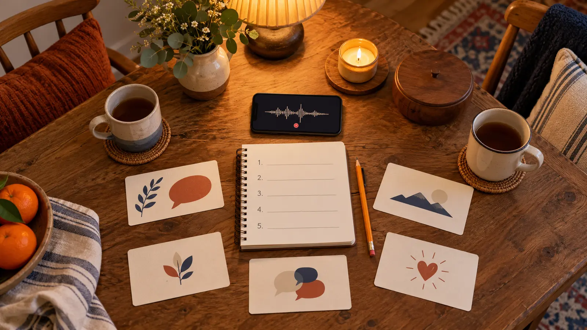

1. Place
What place did you know well when you were my age, and what did it look, sound or smell like?
AT HOME · 30 MINUTES · AGES 7+ · NO-SPEND
You do not need a genealogy subscription or a holiday reunion. You need one willing person, five decent questions and permission that can be withdrawn.

Oral history is a remembered account from a person who experienced a time, place or event. It is valuable because memory carries perspective, detail and voice. It is not automatically a complete or error-free record. The Library of Congress encourages children to ask relatives whether they may record a conversation and to use questions that invite stories. Its teaching material also asks students to question accuracy and compare sources.
This plan keeps the session short enough for a school night and teaches three different labels: the person remembers, another source confirms, and we still do not know.
Write four choices on paper before pressing record: notes? yes/no; audio? yes/no; who may hear it? named people only; delete or review date? a real date. The storyteller can skip any question or stop the session. Library of Congress teaching material explicitly says not to insist when an interviewee does not want to answer.
Do not post a clip “because it is sweet.” Do not upload a child’s recording to a public transcription or AI service unless the adults understand its terms, retention and sharing. A paper summary is a perfectly good result.
| Statement | Label now | Possible check |
|---|---|---|
| “The shop was beside the old bridge.” | Person remembers | Historic map, directory or photo |
| “School closed after the storm.” | Person remembers | Newspaper archive or school record |
| “Everyone felt the same way.” | Perspective, not universal fact | Ask another person respectfully |
Do not turn the interview into a live fact-check. Record the memory respectfully, then investigate later. The map-reading game can help compare a remembered route with a map. The no-posting photo hunt uses the same privacy-first rule.
Supplies: five index cards or scrap paper, pencil, timer and an optional phone or recorder. Cost is $0 with materials already at home. No special microphone is necessary for a family activity. Put the device close enough to hear without making it the center of the conversation.
Low-energy: ask only the place question, take paper notes and stop after ten minutes. Remote relative: ask permission before using any call-recording feature and confirm the laws and app rules that apply; the easy alternative is handwritten notes. Child reluctant: let the child choose one object and ask about that. The family library night is the calmer research follow-up.
Skip recording if consent feels pressured, the topic may expose private medical, legal, financial or traumatic details, or family conflict makes a child the wrong interviewer. Do not ask a child to mediate disputed history. Do not promise archival permanence. For a formal public collection, use the institution’s consent, format and submission rules instead of this family exercise.
MAKE THE DAY COUNT
Build the plan your family can finish well, then leave enough energy for the next part of the day.
More family plans